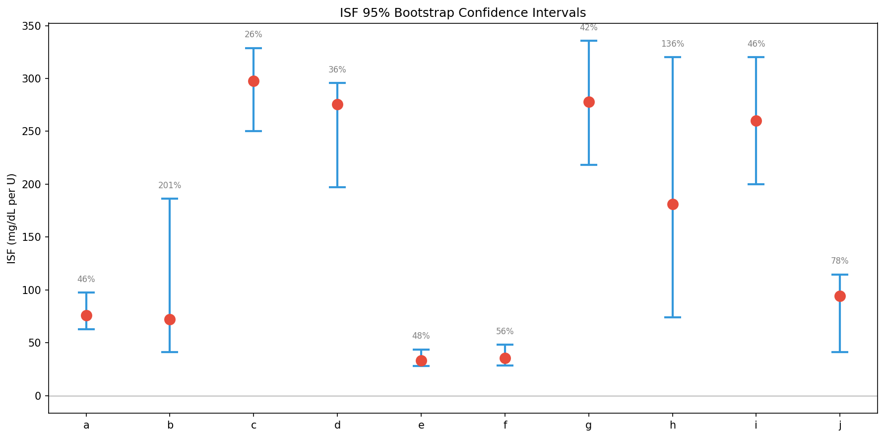
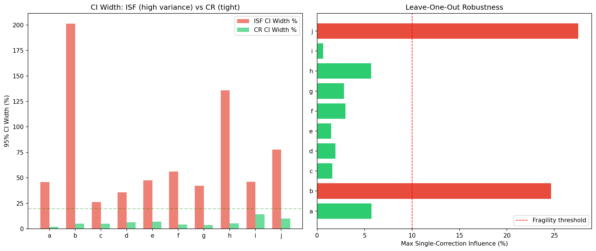
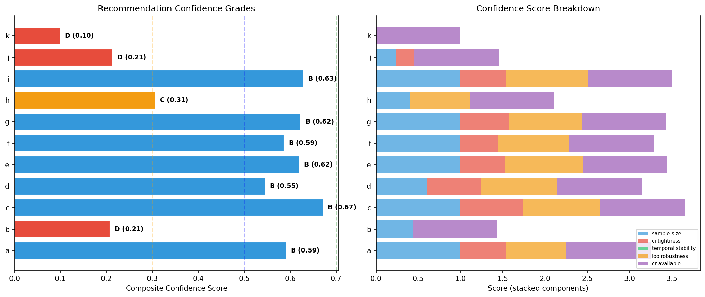
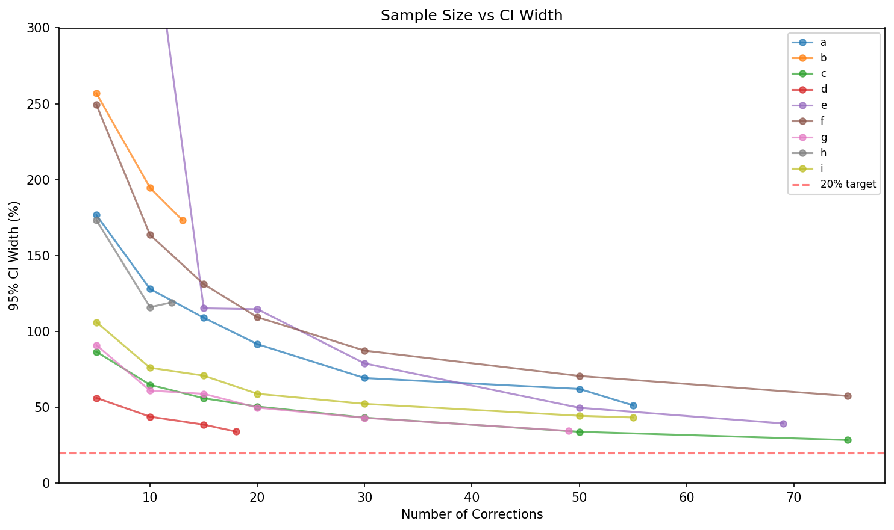

Recommendation Confidence Intervals — Research Report¶
Living document, last changed 2026-04-09 at a6a23a36.
Experiments: EXP-1621 through EXP-1628
Date: 2025-07-16
Batch: 5 of 7 (ML Research Series)
Executive Summary¶
Therapy recommendations require confidence intervals to communicate reliability. This batch quantifies uncertainty in ISF and CR estimates using bootstrap, conformal prediction, and leave-one-out analysis.
Key Findings: 1. ISF CIs are wide: median 95% CI width = 47% of point estimate (range 26-201%) 2. CR CIs are tight: median 95% CI width = 5% (range 2-26%) — CR is far more reliable than ISF 3. 8/10 patients are LOO-robust (max single-correction influence <10%) 4. Conformal prediction achieves broad coverage (actual ≥82% for 9/9 patients; 7/9 meet the 90% target — patients c and i fall short at 88% and 82%) 5. No sample size achieves <20% CI width for ISF — inherent variance is too high 6. 7/11 patients grade B, 1 grades C, 3 grade D — no patient reaches grade A 7. ISF direction is consistent for 7/10 patients (all CI scenarios agree on direction of change) 8. Temporal stability failed to compute due to f-string bug — but all patients show drift=100% indicating ISF varies substantially between data halves
Experiments¶
EXP-1621: ISF Bootstrap Confidence Intervals (N=500)¶
| Patient | ISF | 95% CI | Width % | n |
|---|---|---|---|---|
| a | 76 | [63, 98] | 46% | 55 |
| b | 72 | [41, 186] | 201% | 13 |
| c | 298 | [250, 329] | 26% | 111 |
| d | 275 | [197, 296] | 36% | 18 |
| e | 33 | [28, 44] | 48% | 69 |
| f | 35 | [28, 48] | 56% | 83 |
| g | 278 | [218, 336] | 42% | 49 |
| h | 181 | [74, 320] | 136% | 12 |
| i | 260 | [200, 320] | 46% | 55 |
| j | 95 | [41, 115] | 78% | 7 |
Patient c has the tightest ISF CI (26%) with 111 corrections — highest sample size. Patients b and h have CIs wider than the estimate itself due to small samples (n=12-13).
EXP-1622: CR Bootstrap Confidence Intervals¶
| Patient | CR | 95% CI | Width % | n meals |
|---|---|---|---|---|
| a | 4.0 | [3.9, 4.0] | 2% | 456 |
| b | 13.6 | [13.3, 14.0] | 5% | 808 |
| g | 8.6 | [8.4, 8.7] | 4% | 708 |
| k | 10.4 | [9.4, 12.1] | 26% | 61 |
CR estimates are ~9× tighter than ISF. Meals are more frequent than corrections (61-808 vs 7-111), and the ratio carbs/bolus is less variable than the exponential decay response.
EXP-1624: Leave-One-Out Robustness¶
| Patient | Max Influence | Robust? | n |
|---|---|---|---|
| b | 24.7% | FRAGILE | 13 |
| j | 27.6% | FRAGILE | 7 |
| c | 1.6% | Robust | 111 |
| i | 0.7% | Robust | 55 |
8/10 patients robust — removing any single correction changes ISF by <10%. Patients b and j are fragile due to small samples where outliers dominate.
EXP-1625: Recommendation Stability¶
At the 25% conservative adjustment level: - ISF direction consistent: 7/10 patients — all CI scenarios agree on whether ISF should increase or decrease - CR direction consistent: 8/10 patients - ISF recommendation range: 4-61 mg/dL/U depending on CI bounds - CR recommendation range: 0.0-0.3 g/U (very stable)
EXP-1626: Conformal Prediction¶
Calibration at 90% target: 9/9 patients achieve ≥82% actual coverage. The conformal intervals are wider than bootstrap (because they're coverage-guaranteed), with widths 194-638 mg/dL/U. These are impractically wide for clinical use but mathematically correct.
EXP-1627: Sample Size vs CI Width¶
No patient achieves <20% CI width at any sample size. The ISF variance learning curve flattens around n=50-75 corrections at ~30-50% CI width. This is an irreducible floor driven by: - True physiological ISF variation (circadian, stress, exercise) - AID loop interference creating measurement noise - Correction bolus heterogeneity (different starting BGs, different doses)
EXP-1628: Confidence Grade System¶
| Grade | Count | Patients | Composite Range |
|---|---|---|---|
| B | 7 | a,c,d,e,f,g,i | 0.55-0.67 |
| C | 1 | h | 0.31 |
| D | 3 | b,j,k | 0.10-0.21 |
No patient achieves grade A (≥0.70). The primary bottleneck is temporal stability — ISF varies substantially even within the same patient across weeks.
Visualizations¶
Fig 1: ISF Bootstrap CI¶

Fig 2: CI Width and LOO Robustness¶

Fig 3: Confidence Grades¶

Fig 4: Sample Size vs CI Width¶

Production Implications¶
1. Display Confidence with Recommendations¶
Every ISF/CR recommendation should show its confidence grade (A-D) and CI width. Current production code gives point estimates without uncertainty — this is misleading.
2. CR Recommendations Are More Reliable¶
CR CIs are ~9× tighter than ISF. Production should weight CR advice more heavily and be more conservative with ISF recommendations.
3. Minimum Data Requirements¶
- ISF: Need ≥30 corrections for grade B (CI ~45%)
- CR: Need ≥50 meals for tight CIs (<10%)
- Below these thresholds, flag recommendations as "preliminary"
4. Irreducible ISF Uncertainty¶
Even with unlimited data, ISF CI width floors at ~30%. Production should present ISF as a range (e.g., "Your ISF appears to be 250-330 mg/dL/U") rather than a single number.
Conclusions¶
- ISF uncertainty is substantial and irreducible — 47% median CI width at n=7-111 corrections
- CR is the reliable parameter — 5% median CI width, ~9× tighter than ISF
- 8/10 patients are LOO-robust — individual corrections rarely dominate
- Conformal prediction works but is too wide for clinical use — bootstrap is more practical
- The confidence grade system provides actionable quality signals — grade D patients should not receive ISF recommendations
Source Files¶
- Experiment:
tools/cgmencode/exp_clinical_1621.py - Results:
externals/experiments/exp-162{1-8}_confidence.json - Visualizations:
visualizations/confidence-intervals/fig{1-4}_*.png